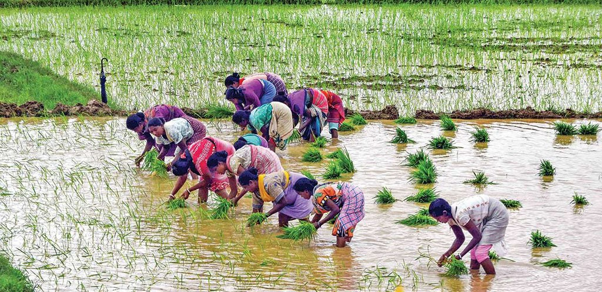
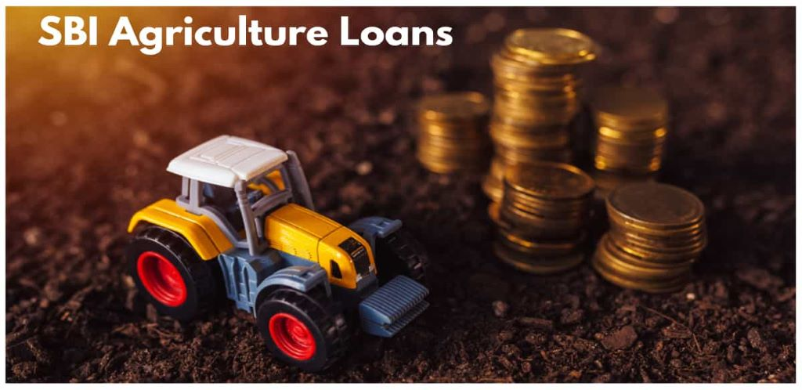
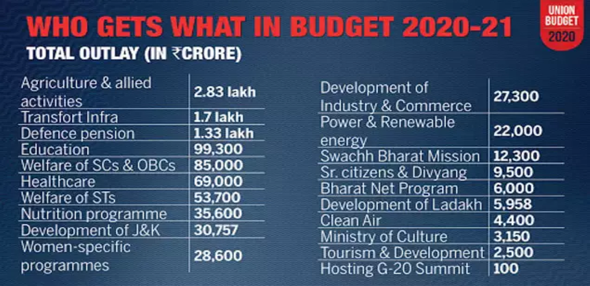
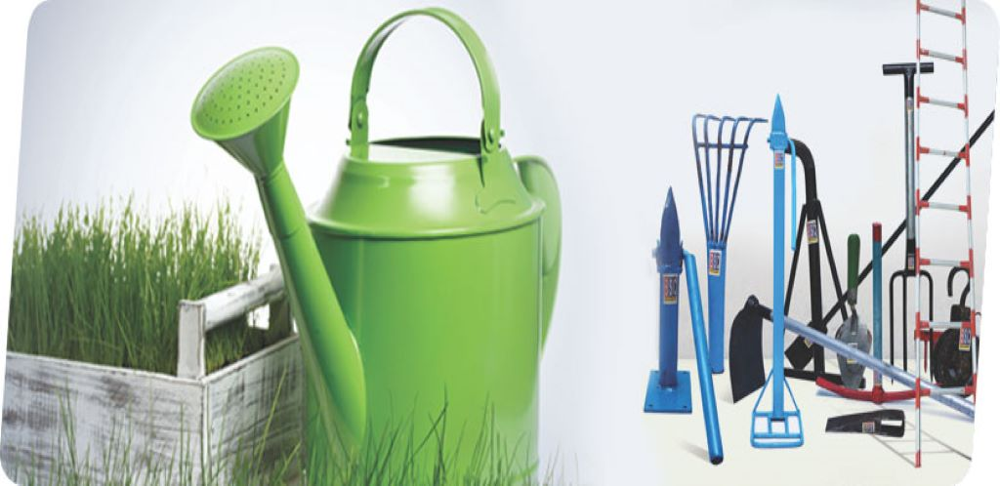

sign-up
login
Farmer Section
Crop Details
Shopping Section
Crop selling and purchasing
Land Section
Land details in guntur
Land details in praksam
Land details in West Godavari
Land details in East Godavari
Land details in Nellore
Land details in Vizianagaram
Loan & Subsidy Section
Loan Details
Loan Application
Loan Status
Subsidy Details
Bank Details
Bank Login
Information Section
Farming Techniques
Organic Farming
English E-Books
Telugu E-Books
Releated Videos
Farmer Community
Forum
A.P Forum
About Us
Contact Details



